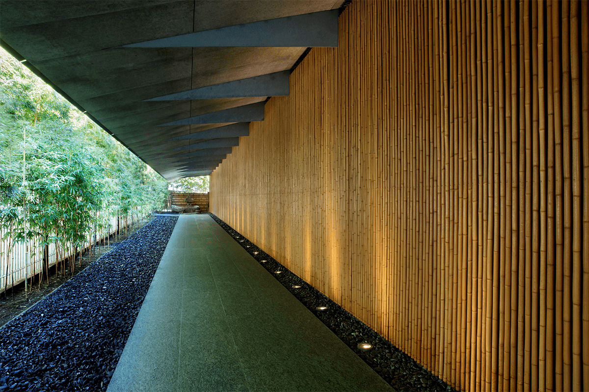
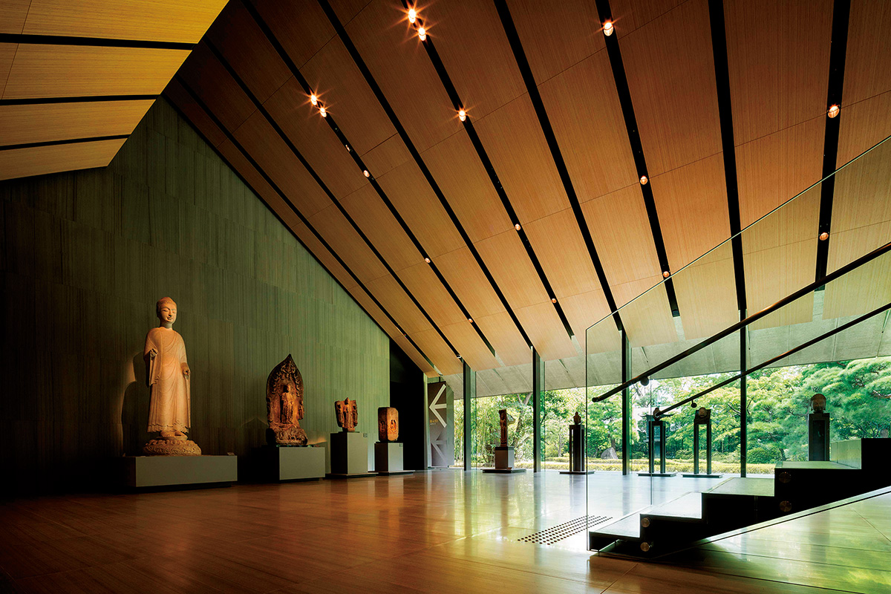
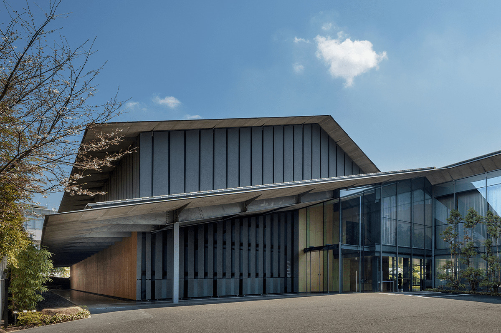
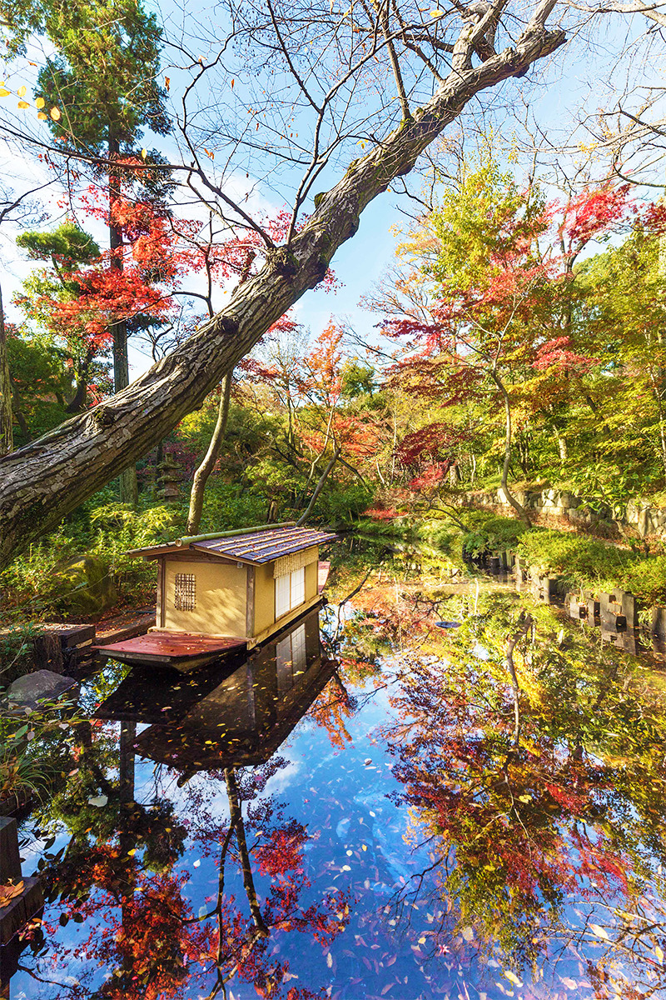
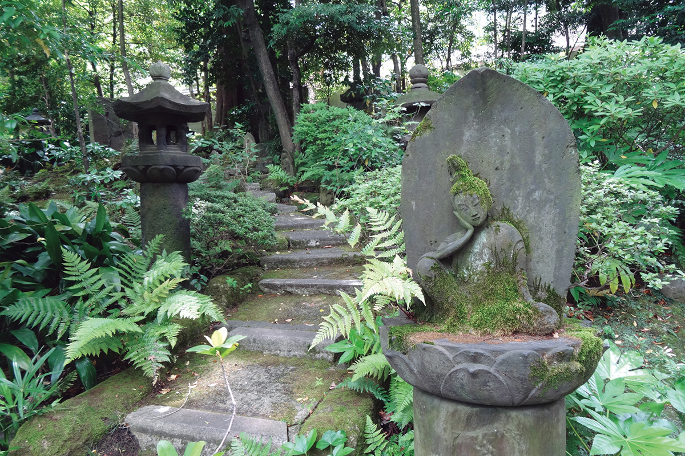
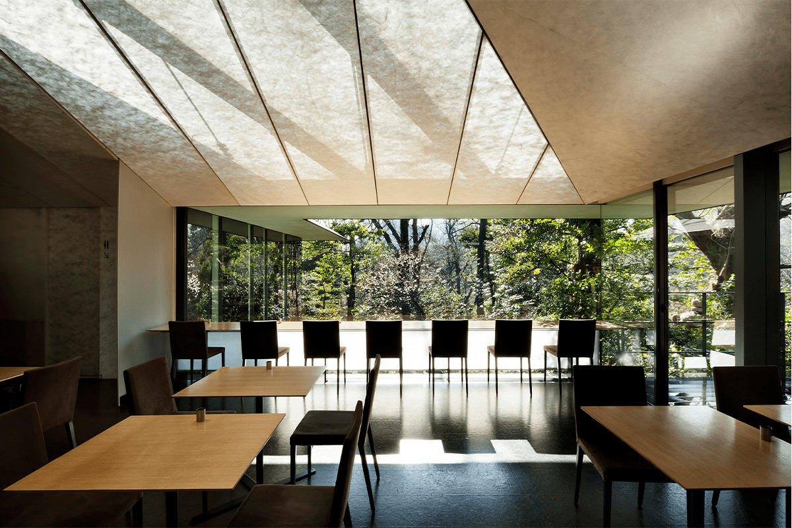
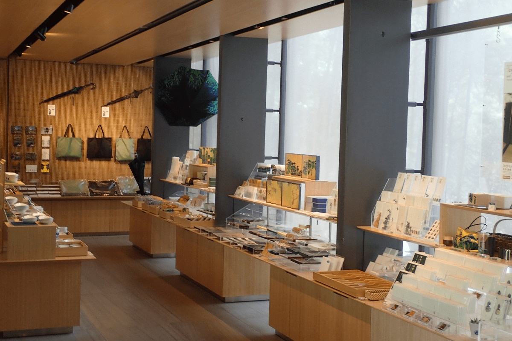
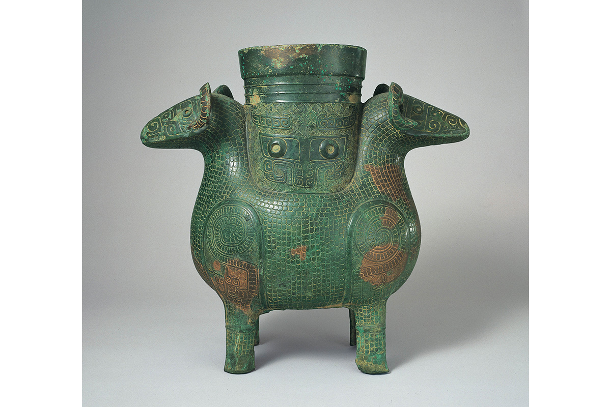

Токио · Минами-Аояма · музей
Музей Нэдзу: древнее искусство Азии и сад посреди Минами-Аоямы

В нескольких минутах от модных улиц Аоямы стоит музей, где можно провести полдня между старинными свитками, чайной утварью и тенистым садом. Музей Нэдзу собрал искусство Японии и Восточной Азии, а его большой сад удивляет многих посетителей.
Музей
Коллекция, которую хотели показывать всем
Музей Нэдзу открылся в 1941 году в бывшей усадьбе предпринимателя Каитиро Нэдзу (1860–1940) в Аояме, чтобы хранить и показывать собранное им старинное искусство Японии и Восточной Азии. Говорят, Нэдзу увлёкся древностями ещё в молодости и собирал их с размахом. Прятать сокровища он не хотел: его мечтой было «радоваться им вместе со всеми».

В собрании около 7 400 предметов: живопись, керамика, лаковые изделия и утварь для чайной церемонии из Японии, Китая и Кореи, от древности до раннего Нового времени. Среди них 7 национальных сокровищ и 88 важных культурных ценностей.
Главное здание с большой крышей, похожей на кровлю японского дома, построено в 2009 году по проекту Кэнго Кумы, одного из ведущих архитекторов современной Японии. Внутри шесть залов, и каждый устроен под свой вид искусства: живопись и каллиграфию, древнюю бронзу, предметы чайной церемонии. Обстановка спокойная, и выставки получаются очень разными.

Сад
Прогулка по японскому саду
Перед лобби раскинулся японский сад, и по нему обязательно стоит пройтись. Музей устраивает семь выставок в год, поэтому, приходя снова, можно увидеть новую часть коллекции и заодно сад в другое время года.

«Многие удивляются, что наш сад занимает около 17 000 кв. м. Ирисы в начале лета, осенние клёны, молодая весенняя листва, зимний снег: такую смену пейзажей дают ежедневный уход и давнее правило музея держать сад как можно ближе к природе»
сотрудник музея

В музее есть магазин с сувенирами по мотивам коллекции и кафе с видом на сад.


Шедевр
Сосуд с двумя баранами

«Каитиро Нэдзу, заложивший основу нашей коллекции, тревожился, что начиная с эпохи Мэйдзи ценное искусство Японии и Восточной Азии уходит в Европу и Америку, и много сил отдавал собирательству. Этот бронзовый сосуд с двумя баранами, стоящими спиной к спине, очень редкий: похожий есть лишь в Британском музее в Лондоне. Он изображён на наших билетах и сувенирах, его все любят, и в нём чувствуется уважение основателя к культуре с долгой историей. Он всегда ждёт гостей в четвёртом зале»
сотрудник музея
Музей Нэдзу
- Адрес
- Токио, Минато, Минами-Аояма, 6-5-1
- Телефон
- +81 3-3400-2536
- Часы работы
- 10:00–17:00, вход до 16:30
- Выходные
- понедельник (если праздник, то вторник), дни смены экспозиции, новогодние праздники
- Цены / Вход
- взрослые от 1 300 иен, вход по онлайн-брони на дату и время (2021 год)
- Как добраться
- от станции Омотэсандо (метро, линия Гиндза и другие), выход A5, 8 минут пешком
- Сайт
- nezu-muse.or.jp
Фото: Масая Ёсимура.